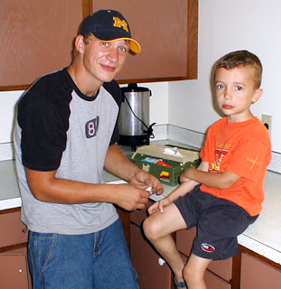
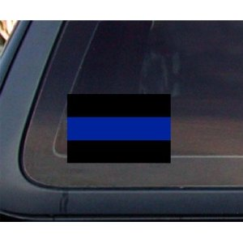

Eric Strausbaugh of Franklin, Wisconsin, a 34-year-old husband and father, killed himself last October 31. Friends recall that he was experiencing marital difficulties and a great deal of job-related stress. A large part of his emotional burden was the result of his actions on November 9, 2004, when he was an accomplice in the murder of Michael Edward Bell.
Strausbaugh, an officer with the Kenosha Police Department, confronted Bell in front of his home at about 2:10 a.m. He has never provided an unambiguous legal rationale for the stop: He first claimed that Bell was speeding, then later asserted that he had run a stop sign. Neither of those claims was validated by the dash cam video from Strausbaugh's cruiser (which actually shows that Strausbaugh blew through a stop sign on the way to Bell's home).
The video shows a visibly puzzled Bell emerging from his vehicle. Within seconds Strausbaugh is literally at the 21-year-old's throat, pushing him up against the vehicle then dragging him off-camera. A brief argument ensues, in which Bell can be heard exclaiming "I know my rights!" and Strausbaugh is heard demanding that the young man submit to a field sobriety test. Near the end of the five minute video clip we can hear Strausbaugh order Bell put his arms behind his back, followed by the unmistakable sound of a Taser being fired.
Three other Kenosha police officers -- who were reportedly within a few blocks of Bell's residence -- arrived on the scene a few minutes later. Strausbaugh insisted that he called for backup because Bell "ran," but there is no evidence to corroborate that claim.
No more than seven minutes after the confrontation began, Bell was dead from a gunshot wound to the head. He was gunned down -- after being kicked and Tasered for several minutes -- in front of his horrified mother and sister. The actual killing was carried out by Officer Albert Gonzalez, who, in the clinical language of Dr. Douglas Kelly, former Chief Medical Examiner for Fond Du Lac County, "made [a] contact wound by pressing his gun against [Bell's] head at the time the shot was fired."
When Gonzalez pulled the trigger, Bell was being restrained by at least two other police officers. Strausbaugh maintained that Bell -- a much smaller man -- somehow managed to bulldog him up against a nearby car, and grab for his gun before being shot to death. Bell supposedly accomplished this feat despite being Tasered multiple times, as well as enduring several punches and knee strikes to the ribs inflicted by Strausbaugh and Officer Erich Weidner (who arrived within minutes of the initial stop).
As depicted in a work of dramatic fiction the Kenosha Police Department wittily calls a "reenactment" of the homicide, Officer Gonzalez supposedly shot Bell in the right side of the head, despite the fact that this would have endangered Lt. David Krueger, who was standing directly behind the victim.
The most significant problem with this story is that "it is forensically impossible" for the shooting to occur as depicted in the Kenosha PD's little skit, according to Dr. Kelly. Gonzalez couldn't have shot Bell as portrayed "without either [Bell's] neck being extremely hyper-extended or his body being bent backwards."
Not to worry: The Kenosha PD -- after offering the most solemn assurances regarding the scrupulous accuracy of its original story -- devised two different versions of the event in an attempt to demonstrate that it was possible for Gonzalez to have shot Bell on the right side of his head. This was done despite the fact that the initial witness statements, and the location of the shell casing following the shooting, made it clear that the gunshot was fired to the left side of the victim's skull.
This detail is critical: If he had been positioned to shoot Bell from the right, Gonzalez would have been able to verify that the victim had been attempting to grab Strausbaugh's gun. During the initial deposition in a civil suit filed by Bell's family, the officers involved in the killing all claimed that the shot was fired to the left side of Bell's head. Those accounts underwent a dramatic revision once the significance of that detail was made clear; suddenly they all ardently maintained that the gunshot had been fired from the right side.
As the version of the killing performed by the Kenosha PD's Perjury Playhouse Theater Troupe demonstrates, a killshot fired from the left would have placed Lt. Kreuger in the line of fire. Even if Kreuger had avoided being shot, his uniform wouldn't have escaped without being decorated by skull fragments and brain tissue. Yet this wasn't the case. Furthermore, although skull fragments were reportedly found on the scene, they were never provided to Dr. Kelly for forensic analysis.
Wherever Gonzalez was positioned when he shot and killed Michael Bell, this much is certain: The officer could not have seen the young man grab for Strausbaugh's gun, because he never did so. Tests run by the Wisconsin State Crime Lab found no fingerprint or DNA evidence indicating that Bell had ever touched Strausbaugh's gun or holster.
 |
| Too short a season: Michael Bell, two months before his murder. |
Last March, on what would have been Michael's 27th birthday, the Kenosha City Government paid Bell's family $1.75 million to settle a federal civil rights lawsuit. In this settlement, unlike most others of its kind, there is no "confidentiality clause"; this permits Bell's family to use the money to pursue reforms intended to promote genuine accountability for police officers who use deadly force.
"I'm not against law enforcement," Michael Bell, Sr. told Pro Libertate. "I'm a retired career military officer who supervised military law enforcement personnel in my chain of command. I am on good terms with people in law enforcement here in Wisconsin, and always have been. But it's clearly improper for police to answer only to themselves when they kill someone -- particularly here in Wisconsin, where there apparently is no police accountability."
"Wisconsin is among the top five states in per-capita fatal police shootings," Bell points out. There were 23 fatal shootings by Wisconsin police, a more than 300 percent increase from the previous year. This isn't because the Badger State has a particularly large or aggressive criminal element -- at least where private sector criminals are concerned.
| Seeking accountability: Michael Bell, Sr. |
"Michael was scheduled to be in court later that morning to deal with the same cop who stopped him -- Officer Strausbaugh," Bell told me. "A few weeks earlier, Strausbaugh had been in a scuffle with Michael outside a local club, and he found a tiny amount of marijuana in Michael's car."
Michael's court date was the morning of November 9, and it's possible that he would have been facing some time in jail. So he "was probably spending a little time with his friends before facing what awaited him the next day," Bell continues. "But no drugs were found in his car after the shooting, and the lab tests showed that he hadn't taken any before the stop."
The test results did show that Michael had a blood alcohol content above the "legal" limit in Wisconsin; it was about the same as the BAC displayed by then-Wisconsin Attorney General Peg Lautenschlager, who was arrested the previous February after driving a state-owned vehicle into a ditch. Michael's BAC was lower than that of James L. Palmer II, the head of the police union (the Wisconsin Professional Police Association, or WPPA) when he was arrested for DUI in December 2009. Palmer, who was attempting to help another inebriated police union official who had plowed her car into a shed after missing a turn, was visibly intoxicated when State Police troopers arrived on the scene.
Given the prominence of the brewing industry in Wisconsin, its state bird should be the lush. As someone who spent many nights performing on the state's bar and club circuit -- an interesting environment for a teetotaler -- I can testify that over-indulgence is commonplace.
When members of Wisconsin's tax-consuming class are found among the offenders, their acts are dismissed as "lapses in judgment"; however, when a mere Mundane like Michael Bell does likewise, it can literally be treated as a capital offense.
Michael Bell occasionally displayed the indiscipline and unruly appetites typical of men his age, but he was neither a criminal nor a troublemaker. Michael's original run-in with Stausbaugh represented the first trouble of that kind he had ever experienced. Why, then, was the officer lurking in Michael's neighborhood at 2:00 a.m., apparently eager to manufacture a reason to arrest him -- just hours before Michael was due in court?
Consider this: A first-time defendant who appears in court wearing a shirt and tie and smelling of decent cologne will make a far different impression on a judge than one who shows up in an orange jail jumpsuit and reeking of delousing spray.
Bell is aware of at least one other case in Kenosha in which a man was stopped by police the night before a court appearance on a trivial infraction. Like Michael, the man in this second incident demanded to know why he had been stopped; the officer reportedly replied that his car had a "busted tail light" -- and then shattered one of the tail lights with his baton. The man was forced to undergo a spurious sobriety test, put in jail, and presented the next morning as a DUI suspect. Presenting a defendant in that light would be a very useful way of bolstering the court credibility of a police officer called to testify as the sole witness for the prosecution.
"I suspect that there has been a pattern here in Kenosha of police targeting people the night before a court case," Bell told Pro Libertate. "This would help explain why, in Michael's case, there were two police cars within a few blocks of his home, all of them facing the same direction, at 2:00 in the morning."
It is incontestable that the Kenosha PD perpetrated a cover-up regarding the killing of Michael Bell. What was covered up, most likely, was an ambush disguised as a traffic stop that degenerated into an outright execution-style murder.
"Because we didn't sign a confidentiality agreement as part of the settlement, we're free to publicize the details of Michael's case as a way of raising public awareness and promoting some badly overdue reforms," Bell points out. "We've put up a half-dozen large billboards featuring a large, smoking gun and the question: `When police kill, should they judge themselves?' We've also set up a website documenting the facts of this case, including much of the video evidence."
Bell also produced a brief, hard-hitting television commercial posing the same question, but found at least some local news outlets were reluctant to run the ad. This is typical of the treatment he's received from the political establishment and much of the media.
"I've approached local and state officials to urge them to change the process, but most of them are very timid about this," Bell noted to Pro Libertate. "There is a very large and powerful police union, and they have a lot of political clout. Nobody likes to be seen as`anti-police,' even to the extent of making them subject to the same laws that govern all of us. And the police union raises a lot of money; the WPPA runs one of the nation's most successful telemarketing fundraising operations."
Some in the priesthood of state-sanctioned violence believe that Michael Bell, Sr. is morally responsible for Officer Strausbaugh's suicide.
Despite the fact that the shooting that claimed Michael Bell's life "was investigated and ruled justified," his "family was not to be consoled," complains Lt. Dan Marcou, a SWAT trainer and former police officer from La Crosse, Wisconsin who writes a column for PoliceOne.com. "They led a relentless campaign in the courts, in the legislature, on the Internet.... The campaign was negative, accusatory and Strausbaugh and the other officers involved found themselves under siege, for nearly six years."
Regurgitating one of the several discredited versions of the Michael Bell murder, Marcou descends into rank melodrama:
"Officer Eric Strausbaugh struggled to hold onto his weapon on November 9, 2004, when his life was in the balance and he was rescued by the back-up officer who he called to the scene for assistance. In the early morning hours of October 31, 2010, Officer Eric Strausbaugh's life hung in the balance once again. This time he decided to not call for back-up. It is a struggle that he lost."
There is a genuine human tragedy in Eric Strausbaugh's self-inflicted death. In an act of authentic Christian compassion, Michael Bell, Sr. expressed sincere regret over the death of the individual who arranged the ambush that resulted in the murder of his son. But from Marcou's perspective, it is Bell who is an accomplice in Strausbaugh's death.
"Don't let the bastards get you down," concludes Marcou, apparently applying that epithet to Bell and other Mundanes who refuse to accept their proper station in society. Theirs is the privilege to kill; ours is the duty to die. Why can't Michael Bell's father simply accept this arrangement, and shut up?
Assuming that Marcou is correct in concluding that Strausbaugh's suicide was an outgrowth of the killing of Michael Bell, the "bastards" at whom he should direct his indignation are members of his own tribe.
 |
| Displaying the colors: A "Thin Blue Line" window decal. |
In April 2005, roughly six months after Michael Bell was killed and the two-day "investigation" that cleared the officers involved in that crime, the WPPA conferred a "Meritorious Award" on Strausbaugh, Weidner, and Gonzalez for "their bravery, unselfish teamwork, and outstanding use of their training" in carrying out the gangland-style slaying. The citation didn't even bother to mention Michael Bell by name, describing him as an uppity Mundane supposedly notorious for his "history of police resistance."
In addition to being placed on a pedestal by the local armed tax-feeder union, Strausbaugh and his cohorts were extolled as a model for police state-wide. As Marcou points out, "Among Wisconsin Law Enforcement Officers, the incident became a guide on how to respond when a suspect was attempting to disarm their partner."
If Eric Strausbaugh -- despite what we might assume on account of his behavior on the morning of November 9, 2004 -- retained even the residue of a conscience, he would have known that he was an accomplice to murder and party to a criminal deception. Yet his professional peers -- people who purport to be the "Finest" in their respective communities -- treated him as a hero and treated his criminal acts as laudatory. His conscience would have demanded that he take responsibility for what he had done. However, his professional survival, however, required that he continue the charade. This is a formula for self-destruction.
Contrary to what we're told to believe, law enforcement is not a particularly dangerous occupation, at least when measured in terms of acts of violence directed at police officers. However, police are frequently a lethal danger to themselves: According to the Philadelphia Inquirer, each year "twice as many cops ... commit suicide as are killed in the line of duty." Significantly, another Kenosha police officer killed himself just weeks prior to Strausbaugh's suicide.
Former Maryland police officer Robert Douglas, executive director of the National P.O.L.I.C.E. Suicide Foundation, describes suicide as "the number one killer of law enforcement today. Accuracy is elusive in documenting the extent of the problem, because it is common to misrepresent suicides as "accidental discharges" or other lethal mishaps in order to avoid liability issues.
What this means, of course, is that our system of "public safety" is built on a population of armed functionaries invested with the power of discretionary killing, many of whom are so emotionally unstable that they pose a potentially lethal threat even to themselves.
Those who insist that the State's agents of official coercion must answer only to themselves aren't unduly troubled by the needless death of mere Mundanes. Given that they are all but inconsolable when one of their own meets an untimely end, they should contemplate this fact: If Eric Strausbaugh had been compelled to take moral responsibility for his actions, he might be alive today.
Thanks for your help in keeping Pro Libertate on-line!
Dum spiro, pugno!